ExCella Reportsリファレンスガイド
5.5. BlockRowRepeatParamParser
5.6. BlockColRepeatParamParser
6.3. ExcelOutputStreamExporter
6.4. OoPdfOutputStreamExporter
9.2.1. カスタムReportsTagParserの作成
9.3. カスタムReportProcessListenerの使用
9.3.1. カスタムReportProcessListenerの作成
9.3.2. カスタムReportProcessListenerの追加
9.4. カスタムReportBookExporterの使用
9.4.1. カスタムReportBookExporterの作成
9.4.2. カスタムReportBookExporterの追加
ExCella ReportsはExCella Coreをベースとした帳票ツールです。
タグが記述されたExcelテンプレートから、ExcelやPDFの帳票を作成します。
テンプレートにExcelを使用しているため、容易に帳票イメージを作成することができ、複雑な設定も不要です。
請求書等の定型帳票からグラフを使用した分析レポートまで様々なタイプのレポートが作成可能です。
本ソフトウェアはApache License, Version 2.0にて公開しています。
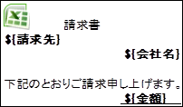 
ExCella Reportsライブラリへの理解を深める第一歩として、本章ではサンプルプログラムを通じて、
実際のライブラリの使用方法を解説します。
プロジェクトのsamplesフォルダに用意されたサンプルプログラムの中から、
定型帳票である請求書、ピポットテーブル、ピポットグラフを使用した分析レポート出力プログラム
を取り上げて、ライブラリの使用方法を解説します。
定型帳票の請求書を作成します。
請求書出力サンプルプログラムは、以下のような構成となっています。
|
samples org.bbreak.excella.reports.samples InvoiceReporter.java …出力を実行するクラス ロゴ.JPG …イメージ置換用の画像ファイル 請求書テンプレート.xls …出力する元となるテンプレートファイル |
請求書テンプレートに、宛先や差出人、請求金額とその内訳等の出力位置にあらかじめタグを入力します。
フォントや罫線、セルの色などの書式設定も設定します。
ExCella Reportsは以下のタグがデフォルトで用意されています。
|
タグ |
説明 |
|
$ |
タグを値に置換する |
|
$I |
タグを画像に置換する |
|
$R[] |
タグを行方向に繰返置換する |
|
$C[] |
タグを列方向に繰返置換する |
|
$BR[] |
タグに指定された範囲を行方向に繰返置換する |
|
$BC[] |
タグに指定された範囲を列方向に繰返置換する |
|
$SUM[] |
タグに指定された値を合計する |
|
$REMOVE |
タグ行を削除する |
詳細は4.1.4帳票パーサ、5標準ReportsTagParser仕様を参照してください。
請求書テンプレートでは、以下のように指定します。
⑫ ⑪ ⑩ ⑨ ⑧ ⑦ ⑥ ⑤ ④ ③ ② ①
Ｄ
|
|
識別子 |
出力位置 |
使用タグ |
セル表示形式 |
|
① |
請求日付 |
G5 |
$ (単純置換) |
日付(yyyy年mm月dd日) |
|
② |
顧客名称 |
D6 |
$ (単純置換) |
標準 |
|
③ |
会社ロゴ |
F7 |
$I (イメージ置換) |
標準 |
|
④ |
差出人住所1～3 |
F11、F12、F13 |
$ (単純置換) |
標準 |
|
⑤ |
合計 |
G17、G24 |
$ (単純置換) |
通貨 |
|
⑥ |
商品名 |
D20 |
$R[] (行繰り返し) |
標準 |
|
⑦ |
単価 |
E20 |
$R[] (行繰り返し) |
通貨 |
|
⑧ |
数量 |
F20 |
$R[] (行繰り返し) |
数値 |
|
⑨ |
金額 |
G20 |
$R[] (行繰り返し) |
通貨 |
|
⑩ |
小計 |
G21 |
$ (単純置換) |
通貨 |
|
⑪ |
値引 |
G22 |
$ (単純置換) |
通貨 |
|
⑫ |
税額 |
G23 |
$ (単純置換) |
通貨 |
2.1.2.1. ブック情報のReportBook
出力するExcel単位にブック情報を保持するReportBookオブジェクトを作成します。
String templateFileName = "請求書テンプレート.xls";
URL templateFileUrl = InvoiceReporter.class.getResource( templateFileName);
String templateFilePath = URLDecoder.decode( templateFileUrl.getPath(), "UTF-8");
String outputFileName = "請求書サンプル";
String outputFileDir = "C:/reports_output/";
String outputFilePath = outputFileDir.concat( outputFileName);
ReportBook outputBook = new ReportBook( templateFilePath, outputFilePath, ExcelExporter.FORMAT_TYPE);
ExCella Reportsのレポート出力処理はこのReportBookオブジェクト単位で行われます。
ReportBookオブジェクトは読み込むテンプレートのファイルパス、出力するファイルパス、
ファイルのフォーマットを指定して生成します。
読み込むテンプレートのファイルパスは、拡張子を含めてフルパスで指定します。
出力するファイルの拡張子は、出力フォーマットタイプで決まるため含める必要はありません。
ファイルフォーマットはXLSの場合のみ複数指定が可能です。
ReportBook outputBook = new ReportBook( templateFilePath, outputFilePath, ExcelExporter.FORMAT_TYPE, OoPdfExporter.FORMAT_TYPE);
サンプルではExcel出力を行うために、ExcelExporterのフォーマットタイプを指定しています。
PDF出力については、2.2PDF帳票の作成を参照してください。
2.1.2.2. シート情報のReportSheet
出力するExcelに含まれるシート単位に、シート情報を保持するReportSheetオブジェクトを作成します。
ReportSheet outputSheet = new ReportSheet( "請求書");
outputBook.addReportSheet( outputSheet);
読み込んだテンプレートのどのシートを出力するかを設定し、ReportBookオブジェクトに追加します。
ReportSheetオブジェクトには読み込むテンプレートのシート名を指定します。
読み込むテンプレートと出力ファイルのシート名が異なる場合は、それぞれ指定します。
ReportSheet outputSheet = new ReportSheet( "請求書", "請求書その１");
サンプルではシートのコピーやシート名の変更を行わないので、シート名１つで指定しています。
テンプレートに記述したタグを置換する値をReportSheetオブジェクトに設定します。
①
Calendar calendar =
Calendar.getInstance();
outputSheet.addParam( SingleParamParser.DEFAULT_TAG, "請求日付", calendar.getTime());
②
List<String> productNameList = new
ArrayList<String>();
productNameList.add( "商品A");
productNameList.add( "商品B");
productNameList.add( "商品C");
outputSheet.addParam( RowRepeatParamParser.DEFAULT_TAG, "商品名", productNameList.toArray());
③
URL imageFileUrl = InvoiceReporter.class.getResource( "ロゴ.JPG");
String imageFilePath = URLDecoder.decode( imageFileUrl.getPath(), "UTF-8");
outputSheet.addParam( ImageParamParser.DEFAULT_TAG, "会社ロゴ", imageFilePath);
① タグ解析時に置換を行うパラメータを、ReportSheetオブジェクトに追加します。
置換パラメータ追加時には、置換対象のタグと、タグで指定した置換識別子、置換する値の置換パラメータの３つを指定します。
指定する値は、テンプレート内の記述に合わせて指定をする必要があります。
② 繰り返し置換するタグへ指定するパラメータには、配列を指定します。
③ 差出人住所の上部には、ロゴとなる画像ファイルを張り付けます。
イメージ置換タグの置換パラメータには画像ファイルのファイルパスを指定する必要があります。
ExCella Reportsで取り扱うことのできるイメージファイルフォーマットはJPEGとPNGの2種類ですが、
今回は読み込むファイルはJPEGフォーマットです。
ReportProcessorのprocess()メソッドに、ReportBookオブジェクトを渡すことで出力処理が行われます。
出力処理が完了すると、ReportBookオブジェクトに指定したファイル名でファイルが生成されます。
ReportProcessor reportProcessor = new ReportProcessor();
reportProcessor.process( reportBook);
サンプルプログラムでは、１つのテンプレートから１つのExcelファイルを出力していますが、
ReportBookオブジェクトやReportSheetオブジェクトを増やすことで、複数のブック、シートを同時に出力することも可能です。
以上が、ExCella Reportsライブラリを利用して帳票を出力するプログラムを
作成する基本的な流れになります。
請求書出力のサンプルプログラムでは、Excelファイルとして出力しましたが、
ExCella ReportsではExcelファイルの他に、OpenOfficeのPDF変換を利用して、
PDFファイルとしても帳票出力をすることが可能です。
samplesにある交通費申請書出力プログラムでは、申請書をPDFファイルとして出力しています。
交通費申請書出力プログラムの構成は、以下のようになっています。
|
samples org.bbreak.excella.reports.samples TransExpenseReporter.java …出力を実行するクラス 交通費申請書テンプレート.xls …出力する元となるテンプレートファイル |
出力フォーマットにPDFを指定する場合は、RepotBookインスタンス生成時の変換タイプに
OoPdfExporterのフォーマットタイプを指定します。
String templateFileName = "交通費申請書テンプレート.xls";
URL templateFileUrl = TransExpenseReporter.class.getResource( templateFileName);
String templateFilePath = URLDecoder.decode( templateFileUrl.getPath(), "UTF-8");
String outputFileName = "交通費申請書サンプル";
String outputFileDir = "C:/reports_output/";
String outputFilePath = outputFileDir.concat( outputFileName);
ReportBook outputBook = new ReportBook( templateFilePath, outputFilePath, OoPdfExporter.FORMAT_TYPE);
PDFに各種オプションを指定することも可能です。
オプションを指定する場合は、ConvertConfigurationオブジェクトを使用します。
ConvertConfiguration convertConfig = new ConvertConfiguration( OoPdfExporter.FORMAT_TYPE);
convertConfig.addOption( "RestrictPermissions", Boolean.TRUE); // 制限設定：有
convertConfig.addOption( "PermissionPassword", "pass"); // 編集パスワード
convertConfig.addOption( "Printing", 0); // 印刷不可
convertConfig.addOption( "Changes", 4); // 編集不可
ReportBook outputBook = new ReportBook( templateFilePath, outputFilePath, convertConfig);
各種オプションについては、6.2.OoPdfExporterを参照してください。
ピボットテーブル、ピポットグラフを利用した分析帳票を作成します。
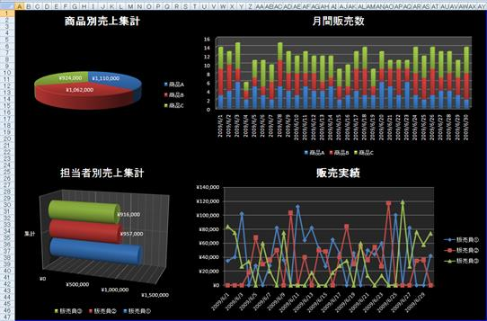
ピボットグラフ出力プログラムの構成は、以下のようになっています。
|
samples org.bbreak.excella.reports.samples PivotGraphData.java …元データを表すPOJOクラス PivotGraphReporter.java …出力を実行するクラス ピボットグラフテンプレート.xls …出力する元となるテンプレートファイル |
出力テンプレートファイルには以下の3つのシートがあります。
|
シート名 |
説明 |
|
テーブル |
グラフ用のピボットテーブルが複数用意されています。 名前定義"元データ"を参照しています。 |
|
グラフ |
[テーブル]シートのピボットテーブルを元に生成した グラフが貼り付けられています。 |
|
元データ |
[テーブル]シートのピボットテーブルが参照するデータを出力します。 データの範囲を名前定義"元データ"で定義しています。 |
元データシートの一行目には”$BR[]”タグ(識別子：売上データ)を記述し、
販売日、商品名、単価、数量、金額、担当者を1ブロックとして展開するよう指定しておきます。
fromCellにはブロックの範囲の開始セルを、toCellにはブロックの範囲の終了セルを、
タグセルを 0:0（行:列）とした相対座標で記入します。
サンプルではタグセルA1で開始セルA3～終了セルF3ですので、「fromCell=2:0,toCell2:5」となります。
詳細は5.5BlockRowRepeatParamParserを参照してください。
ピボットグラフは元データシートに追加されるデータを参照して表示を行い、その参照先には
追加される行数に合わせて元データの範囲が可変となるよう、関数が定義されています。
|
名前 |
参照範囲 |
|
元データ |
=OFFSET(元データ!$A$2,0,0,COUNTA(元データ!$B:$B),6) |
ブロック置換タグ（$BR[]、$BC[]）に指定する置換パラメータには、独自に定義したクラスのオブジェクトが使用できます。
ブロック範囲内にある単純置換タグにクラスのフィールド名を指定することで、ブロックとクラスを対応させて
出力することができます。
グラフの元データとしてPivotGraphDataクラスにはテンプレートに対応した項目が定義されています。
PivotGraphDataクラスに合わせて、テンプレートのBRブロック内にはフィールド名の単純置換タグを記述します。
public class PivotGraphData {
private Date salesDate;
private String productName;
private BigDecimal unitPrice;
private BigDecimal quantity;
private BigDecimal price;
private String salesPerson;
：
}
|
フィールド名 |
対応するテンプレートの項目名 |
|
salesDate |
販売日 |
|
productName |
商品名 |
|
unitPrice |
単価 |
|
quantity |
数量 |
|
price |
金額 |
|
salesPerson |
担当者 |
元データの置換パラメータ追加時にはPivotGraphDataオブジェクトの配列を指定することで、
ブロック置換時に、指定されたフィールド名でブロック内の値の置換が行われるようになります。
PivotGraphData[] datas = createRandomPivotGraphDatas();
outputDataSheet.addParam( BlockRowRepeatParamParser.DEFAULT_TAG, "売上データ", datas);
出力されたファイルの元データシートを開くと、実行時に指定したPivotGraphDataオブジェクトの
各フィールドに設定された値で、データの置換と行の追加が行われていることが確認できます。
3. Webアプリケーションでの利用
ストリーム出力を利用して、作成した帳票をWebブラウザから開くことができます。
Excel形式の帳票の場合、ExcelOutputStreamExporterを使用します。
※ExcelOutputStreamExporterはVer1.1で追加されました。
ファイルフォーマットにExcelOutputStreamExporterを指定すると、作成されたExcelがストリームに出力されます。
protected void doGet(HttpServletRequest request,
HttpServletResponse response) throws ServletException, IOException {
：
// レスポンス設定
response.setContentType("application/vnd.ms-excel");
// Excelファイルのダウンロード
response.setHeader("Content-disposition","attachment; filename=test.xls");
ReportProcessor reportProcessor = new ReportProcessor();
：
ReportBook outputBook = new ReportBook( templateFilePath, outputFilePath, ExcelOutputStreamExporter.FORMAT_TYPE);
reportProcessor.addReportBookExporter( new ExcelOutputStreamExporter( response.getOutputStream));
reportProcessor.process( outputBook);
PDF形式の帳票の場合、OoPdfOutputStreamExporterを使用します。
※OoPdfOutputStreamExporterはVer1.1で追加されました。
protected void doGet(HttpServletRequest request,
HttpServletResponse response) throws ServletException, IOException {
：
// レスポンス設定
response.setContentType("application/pdf");
// PDFファイルのダウンロード
// response.setHeader("Content-disposition","attachment; filename=test.pdf");
// PDFファイルをブラウザで開く
response.setHeader("Content-disposition","inline; filename=test.pdf");
ReportProcessor reportProcessor = new ReportProcessor();
：
ReportBook outputBook = new ReportBook( templateFilePath, outputFilePath, OoPdfOutputStreamExporter.FORMAT_TYPE);
reportProcessor.addReportBookExporter( new OoPdfOutputStreamExporter( response.getOutputStream()));
reportProcessor.process( outputBook);
※2009/10現在、OpenOffice.orgのPDF変換が2007形式（*.xlsx）のExcelテンプレートに対応していないため、
2007形式の帳票をOoPdfOutputStreamExporterで出力することはできません。
詳細は6.2.OoPdfExporterを参照してください。
ExCella Reportsは大きく、以下のように構成されています。
| 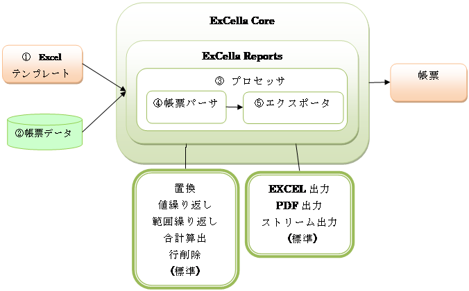 |
① Excelテンプレート … 出力する帳票の元となるタグが記載されたExcel形式のテンプレートファイル。
② 帳票データ … 出力する帳票データ（置換するデータ、変換情報）を保持する部分。
③ プロセッサ … Excelテンプレートと帳票データを制御しExCella Coreとの仲介となる部分。（ReportProcessorクラス）
④ 帳票パーサ … Excelテンプレートのタグと帳票データの置換処理を行う部分。（ExCella Core へTagParserとして渡される）
⑤ エクスポータ …置換済帳票ワークブックの出力処理を行う部分。（ExCella Core へBookExporterとして渡される）
※ 標準で、各種ReportsTagParserと各種Exporterが用意されていますが、
ReportsTagParserとExporterを拡張、差し替える事で様々な用途への応用が可能です。
4.1.1. Excelテンプレート
出力する帳票の元となるタグが記載されたExcel形式のテンプレートファイルです。
パーサで指定されているタグを記述することで、対応する帳票データと置換されます。
Excel帳票の場合、出力形式が2003以前であれば97-2003ブック(*.xls)で、2007であれば(*.xlsx)で
テンプレートを作成する必要があります。
帳票データであるReportBookオブジェクトは、出力帳票毎に作成します。ReportBookオブジェクトにテンプレートファイル、
変換情報であるConvertConfigurationオブジェクト、出力するシート情報であるReportSheetオブジェクトを設定します。
ConvertConfigurationオブジェクトには、変換フォーマットとフォーマットに対するオプションを指定します。
ReportSheetオブジェクトにテンプレートシートとタグに対応する帳票データを設定することで、帳票が作成されます。
また、ReportSheetオブジェクトに指定されないテンプレートシートはそのまま出力されます。
詳細はExCella ReportsのJavaDocを参照してください。
Excelテンプレートの帳票データ置換から帳票出力までの大まかな処理の流れを説明します。
より詳細な情報は、9.1処理フロー/カスタマイズポイントを参照してください。
1. プロセッサがReportBook毎に、Excelテンプレートを出力帳票に合わせてシートを展開する。
2. プロセッサが展開されたシート毎に、SheetParserを呼び出す。
3. SheetParserがシート内のタグを検査し、タグに応じたReportsTagParserを呼び出す。
4. ReportsTagParserが置換処理を実行する。
5. プロセッサがエクスポータを呼び出す。
6. エクスポータが置換済出力帳票Excelの出力処理を実行する。
帳票パーサはExcelテンプレートのタグを解析し、置換処理を行う処理クラスです。
ExCella CoreのTagParserとして使用されます。
l 標準ReportsTagParser
ExCella Reportsでは標準ReportsTagParserとして下記のReportsTagParserが用意されており、
標準ReportsTagParserとExcel上のタグを組み合わせることで様々な帳票作成を可能にしています。
Ø SingleParamParser … タグを値に置換します。
Ø ImageParamPaser … タグを画像に置換します。画像ファイルはJPG、PNGに対応しています。
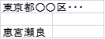
Ø RowRepeatParamParser … タグを行方向に繰返置換します。
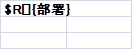
Ø ColRepeatParamParser … タグを列方向に繰返置換します。
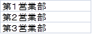 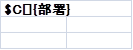
Ø BlockRowRepeatParamParser … タグに指定された範囲を行方向に繰返置換します。
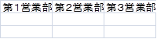
Ø BlockColRepeatParamParser …タグに指定された範囲を列方向に繰返置換します。
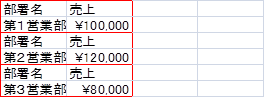
Ø SumParamParser …タグに指定された繰返し項目値を合計したもので置換します。
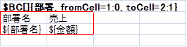
Ø RemoveParamParser …Ver1.0では、タグが記述されている行を削除します。
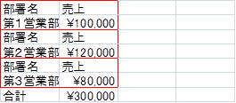
Ver.1.1では、タグに指定されたセル、または列、行を削除します。
l カスタムReportsTagParser
上記の標準ReportsTagParserで対応できない場合は、独自のカスタムReportsTagParserを追加することができます。
詳細は9.2カスタムReportsTagParserの使用を参照してください。
エクスポータは帳票パーサを利用して置換したワークブックを出力するための処理クラスです。
ReportBookオブジェクトにて設定したフォーマットと一致するエクスポータが出力処理を行います。
l 標準ReportBookExporter
ExCella Reportsでは標準ReportBookExporterとして下記のReportBookExporterが用意されています。
Ø ExcelExporter … Excelファイル出力
Ø OoPdfExporter … OpenOffice経由でのPDFファイル出力
Ø ExcelOutputStreamExporter（Ver.1.1追加） …ストリーム出力（Excel形式）
Ø OoPdfOutputStreamExporter（Ver.1.1追加） …ストリーム出力（PDF形式）
l カスタムReportBookExporter
上記の標準ReportBookExporterで対応できない場合は、独自のカスタムReportBookExporterを追加することができます。
詳細は9.4カスタムReportBookExporterの使用を参照してください。
SingleParamParserが理解するパラメータ情報です。
|
パラメータ |
定義例 |
必須/任意 |
説明 |
|
なし |
${名前} |
必須 |
置換する値のパラメータ名を指定。 |
Ver1.0では、ひとつのセルに指定できるのはひとつのタグのみとなります。

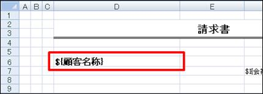
Ver1.1以降では、タグと文字列が混在していても置換対象になります。また、複数タグにも対応しています。

 |
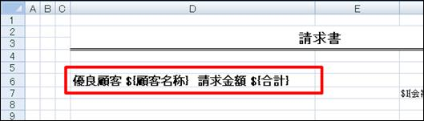
ImageParamPaserが理解するパラメータ情報です。
|
パラメータ |
定義例 |
必須/任意 |
説明 |
|
なし |
$I{ロゴ} |
必須 |
置換する値のパラメータ名を指定。 |
|
widthAdjustment
|
$I{ロゴ,widthAdjustment=10} |
任意 |
正の整数指定 画像の幅が拡大する。 |
|
heightAdjustment
|
$I{ロゴ,heightAdjustment=100} |
任意 |
正の整数指定 画像の高さが拡大する。 |
|
scale |
$I{ロゴ,scale=0.85} |
任意 |
少数で画像サイズの拡大・縮小率を指定する。未指定の場合は1.0 |
※Excelテンプレートに図形オブジェクト、コメントが存在する場合は設定できません。
※画像使用時の注意点
パーサを使用してイメージを挿入した場合に元の画像と倍率が異なって表示される事があります。
そのような場合は下記の方法で見た目上の画像サイズの調整が可能です。
1. ある画像を表示した場合、幅が元画像の114%、高さが元画像の98%になる。
2. 幅と高さを元画像に対して同じ倍率にするため、heightAdjustmentを100に設定すると高さが元画像の114%になり、幅と高さの倍率が同じになる。
3. このままだと画像が拡大された状態なのでscale (100% / 114% ≒ 0.88)を設定し、見た目のサイズを元画像に近づける。
差し込む画像、Excelのバージョン、セルのサイズによって結果が異なりますので、実行結果を確認しながらパラメータを
調整してください。
また、POIの制限事項によりscaleで調整した結果が不適切な値を返すこともあります。
RowRepeatParamParserが理解するパラメータ情報です。
|
パラメータ |
定義例 |
必須/任意 |
説明 |
|
なし |
$R[]{部署名} |
必須 |
置換する値のパラメータ名、もしくはシステム変数を指定。 |
|
hideDuplicate
|
$R[]{部署名,hideDuplicate=true} |
任意 |
true/false指定。 前セルと同じ値である場合、空欄を設定。未指定はfalse |
|
rowShift |
$R[]{部署名,rowShift=true} |
任意 |
true/false指定。値の挿入時に行単位でシフトする。未指定はfalse |
|
breakNum |
$R[]{部署名,breakNum=5} |
任意 |
0以上の整数指定。指定回数で改ページを挿入する。 未指定の場合は0（改ページを挿入しない）※ |
|
changeBreak |
$R[]{部署名,changeBreak=true} |
任意 |
true/false指定。前セルと同じ値でない場合、改ページを挿入する。未指定の場合はfalse※ |
|
repeatNum |
$R[]{部署名,repeatNum=5} |
任意 |
0以上の整数指定。指定回数を最大繰り返し回数とする。 |
|
sheetLink |
$R[]{部署名,sheetLink=true} |
任意 |
true/false指定。同一ブックのシート順（ReportSheetが存在するもののみ）にハイパーリンクを設定する。未指定はfalse |
|
property |
$R[]{#SHEET_VALUE[],property=名前} |
必須 |
パラメータ名にシステム変数※ #SHEET_VALUE[]を指定した場合必須。各シートで設定されているパラメータ名を指定する。 |
※テンプレートが97-2003ブック(*.xls)の場合のみ有効
※システム変数は以下のとおり
|
変数名 |
説明 |
|
#SHEET_NAME[] |
同一ワークブックのシート名 |
|
#SHEET_VALUE[] |
同一ワークブックで指定した変数値（パラメータ名はpropertyで指定） |
ColRepeatParamParserが理解するパラメータ情報です。
|
パラメータ |
定義例 |
必須/任意 |
説明 |
|
なし |
$C[]{部署名} |
必須 |
置換する値のパラメータ名、もしくはシステム変数を指定。 |
|
hideDuplicate
|
$C[]{部署名,hideDuplicate=true} |
任意 |
true/false指定。 前セルと同じ値である場合、空欄を設定。未指定はfalse |
|
repeatNum |
$C[]{部署名,repeatNum=5} |
任意 |
0以上の整数指定。指定回数を最大繰り返し回数とする。 |
|
sheetLink |
$C[]{部署名,sheetLink=true} |
任意 |
true/false指定。同一ブックのシート順（ReportSheetが存在するもののみ）にハイパーリンクを設定する。未指定はfalse |
|
property |
$C[]{#SHEET_VALUE[],property=名前} |
任意 |
パラメータ名にシステム変数※ #SHEET_VALUE[]を指定した場合必須。各シートで設定されているパラメータ名を指定する。 |
※RowRepeatParamParser参照
BlockRowRepeatParamParserが理解するパラメータ情報です。（BlockColRepeatParamParser共通）
|
パラメータ |
定義例 |
必須/任意 |
説明 |
|
なし |
$BR[]{商品データ,fromCell=1:0,toCell=3:1} |
必須 |
置換する値のパラメータ名を指定する。 |
|
fromCell |
$BR[]{商品データ,fromCell=1:0,toCell=3:1} |
必須 |
ブロックの範囲の開始セルを、タグセルを 0:0（行:列）とした相対座標で記入する。 |
|
toCell |
$BR[]{商品データ,fromCell=1:0,toCell=3:1} |
必須 |
ブロックの範囲の終了セルを、タグセルを 0:0（行:列）とした相対座標で記入する。 |
|
repeatNum |
$BR[]{商品データ,fromCell=1:0,toCell=3:1, repeatNum=5} |
任意 |
0以上の整数指定。 指定回数を最大繰り返し回数とする。 |
|
hideDuplicate |
$BR[]{商品データ,fromCell=1:0,toCell=3:1,hideDuplicate=商品名;種類} |
任意 |
ブロック範囲内の単純置換の置換変数を指定する。 |
|
removeTag |
$BR[]{商品データ,removeTag=true} |
任意 |
true/false指定。タグ行を行削除でなくブランクにする場合、trueを指定する。未指定の場合はfalse |
例
BCブロックに4つの繰り返しデータが設定されており、各BCブロックの${商品A}単純置換が
それぞれ、商品A1、商品A1、商品A2、商品A2と置換されるデータが設定されているものとします。

|
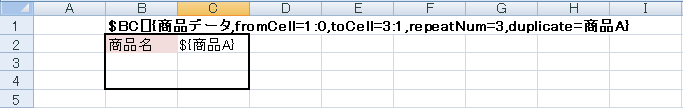
l セルの検査順序
BlockRowRepeatParamParser、BlockColRepeatParamParserはオプションで指定された範囲内のセルを
下図の矢印方向の順序で検査を行います。
l BlockRowRepeatParamParser展開例
BlockRowRepeatParamParserの展開は下図の順序で行われます。
グレーで塗りつぶしをしてあるセルはブロック内のタグの展開によって、ブロックの範囲が変わるため
空白を挿入するセルです。
※実際にはグレーの塗りつぶしは行われません。
|
|
|
|
新しく空白が挿入されたセル
それまでの処理で空白が挿入されたセル
テンプレート
| 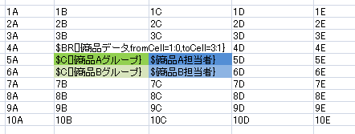 | |||
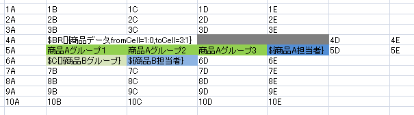
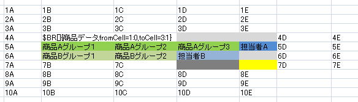
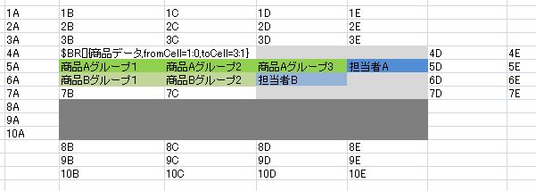

BlockColRepeatParamParserが理解するパラメータはBlockRowRepeatParamParserと同じため
BlockRowRepeatParamParserのパラメータ情報を参照してください。
l BlockColRepeatParamParser展開例
BlockColRepeatParamParserの展開は下図の順序で行われます。
グレーで塗りつぶしをしてあるセルはブロック内のタグの展開によって、ブロックの範囲が変わるため
空白を挿入するセルです。
※実際にはグレーの塗りつぶしは行われません。
|
|
|
|
新しく空白が挿入されたセル
それまでの処理で空白が挿入されたセル
テンプレート
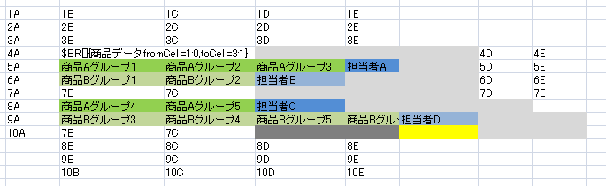
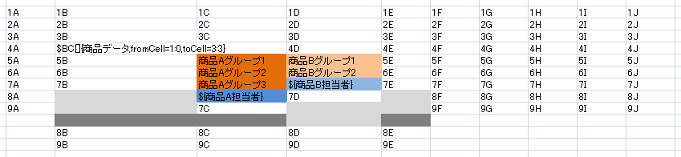
 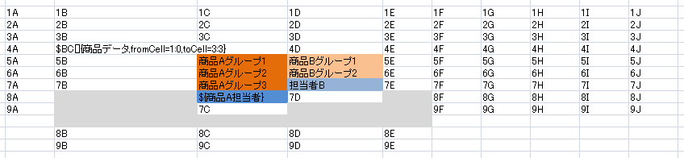
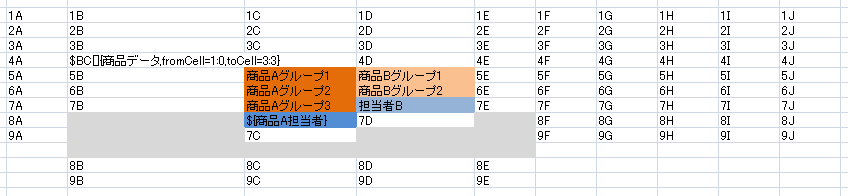
 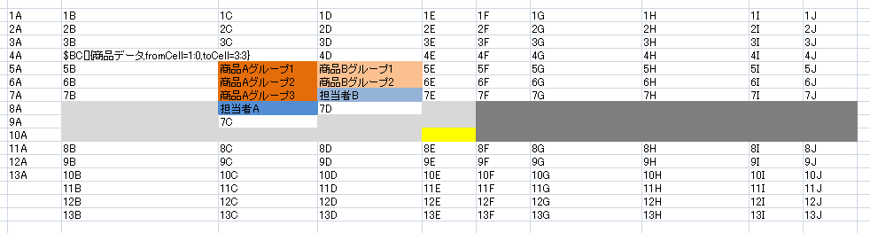
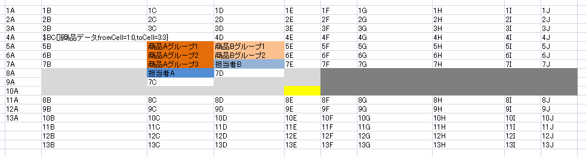
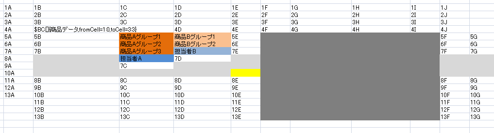
SumParamParserが理解するパラメータ情報です。
|
パラメータ |
定義例 |
必須/任意 |
説明 |
|
なし |
$SUM{$R[]:金額} $SUM{$BR[]:部署.$:金額} |
必須 |
置換する合計値の算出対象となる値をタグ名＋「:」＋パラメータ名を指定。入れ子内のパラメータを指定する場合は「.」で区切り、子のタグ名＋「:」＋パラメータ名を指定。 |
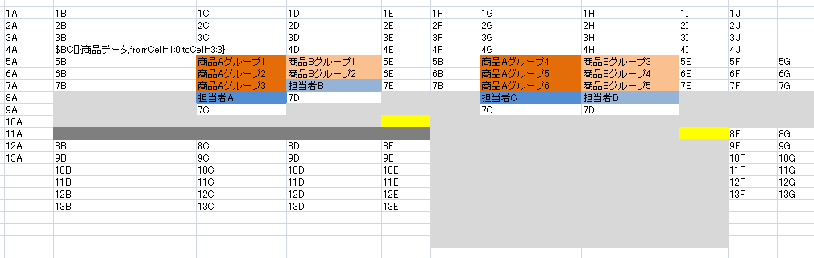
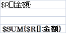
Ver.1.0では、RemoveParamParserが理解するパラメータはありません。
Ver.1.1以降で下記のパラメータが追加され、列・セルの削除に対応しました。
|
パラメータ |
定義例 |
必須/任意 |
説明 |
|
cell |
$REMOVE{cell} |
任意 |
削除範囲を指定。タグを含むセルが削除され、左方向にシフトする。 |
|
left |
$REMOVE{cell,left} |
任意 |
セル削除後にシフトする方向を指定。上記のように未指定でも同じ。 |
|
up |
$REMOVE{cell,up} |
任意 |
セル削除後、セルがシフトする方向を指定。上方向にシフトする。 |
|
column |
$REMOVE{column} |
任意 |
削除範囲を指定。このパラメータを指定したタグを含む列全体が削除される。 |
|
row |
$REMOVE{row} |
任意 |
削除範囲を指定。このパラメータを指定したタグを含む行全体が削除される。 |
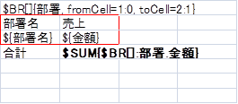
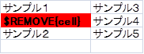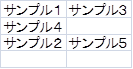
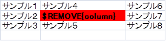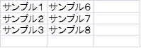
パラメータを指定しないと行削除となります。
6. 標準ReportBookExporter仕様
・概要
Excelファイル出力を行うエクスポータです。
Excelテンプレートと同じファイル形式のExcelワークブックを出力します。
・フォーマット
Excel
・オプション
なし
・概要
OpenOffice.org経由でのPDFファイル出力を行うエクスポータです。
JODConverter（3.0-beta-2）を使用して出力処理を行っています。
※OpenOffice.org 3.0.0以降がインストールされている必要があります。
・フォーマット
・オプション
OpenOffice.org APIが対応している変換オプション
Windows環境において常時起動したOpenOffice.orgでPDF変換処理を行うとメモリリークが発生します。
そのため、OoPdfExporterでは、ワークブック処理毎にOpenOffice.orgを再起動しています。
OpenOffice.orgを再起動を独自に行いたい場合、OoPdfExporterを生成する際OfficeManagerを設定してください。
OfficeManagerについての詳細は、JODConverterを参照してください。
// プロセッサ生成
ReportProcessor reportProcessor = new ReportProcessor();
// OfficeManagerの作成
OfficeManager officeManager = new DefaultOfficeManagerConfiguration().buildOfficeManager();
// OfficeManagerを指定して、OoPdfExporterの作成
OoPdfExporter ooPdfExporter = new OoPdfExporter(officeManager);
// OoPdfExporterのセット
reportProcessor.addReportBookExporter( ooPdfExporter);
// OpenOffice起動
officeManager.start();
try {
//実行
reportProcessor.process( outputBook);
} finally {
//OpenOffice終了
officeManager.stop();
}
※2009/10現在、POIで出力された2007形式（*.xlsx）のワークブックがOpenOffice.orgで読み込めないため2007形式（*.xlsx）のExcelテンプレートには対応しておりません。
・概要
ストリーム出力を行うエクスポータです。
作成したExcelワークブックをストリームに出力します。
・フォーマット
Excel
・オプション
なし
※ExcelOutputStreamExporterは、Ver.1.1から利用できます。
・概要
ストリーム出力を行うエクスポータです。
作成したPDFファイルをストリームに出力します。
・フォーマット
・オプション
なし
※OoPdfOutputStreamExporterは、Ver.1.1から利用できます。
POIの不具合等のため、現バージョンでは以下の制限事項があります。
|
項目 |
*.xls |
*.xlsx |
説明 |
|
置換対象のテンプレートでの数式の記述 |
○ |
× |
POIにて*.xlsxのテンプレートでシートコピー（cloneSheet()）すると、数式の情報がおかしくなる テンプレートシート名と出力シート名に同じ名前を設定し、シートコピー不要の帳票にすることで回避可能 |
|
RowRepeatParamParserの改ページオプション（breakNum,changeBreak） |
○ |
× |
POIにて*.xlsx タイプの改ページ処理が正しく動作しない（POIバグ報告47102） |
|
印刷範囲を設定したテンプレートをシートコピー |
× |
× |
印刷範囲情報がコピーでは反映されない コピーしたシートに対してPOIで印刷範囲を設定することで回避可能 |
|
印刷設定されているテンプレートへのImageParserによる画像挿入 |
○ |
× |
POIにて印刷設定されている*.xlsxのテンプレートでシートコピー（cloneSheet()）したシートに画像を挿入すると、印刷設定情報がおかしくなる テンプレートシート名と出力シート名に同じ名前を設定し、シートコピー不要の帳票にすることで回避可能 |
|
画像があるテンプレートをシートコピー |
× |
× |
シートコピーをしたシートには画像が表示されない （POIバグ報告46250） テンプレートに画像を埋めるのではなく、ImageParamParserを利用すれば画像表示が可能。ただし画像サイズ、画像数によって出力可能なシート数は異なる |
|
テンプレートへのImageParamParserによる画像挿入 |
× |
× |
POIにてテンプレートに画像を挿入すると、画像サイズがおかしくなることがある 画像サイズ補正用のパラメータを利用して回避することが可能（widthAdjustment / heightAdjustment / scale） |
|
ImageParamParserの画像倍率オプション（scale） |
× |
× |
画像、ファイル種別、セルのサイズにより適切でない倍率の画像が表示されることがある |
|
図形オブジェクト、コメントがあるテンプレートへのImageParserによる画像挿入 |
× |
× |
POIでは既存のシェイプの操作が制限事項であるため (既存のシェイプが消えてしまう) |
|
OoPdfExporterによるPDF出力 |
○ |
× |
POIで出力したxlsxファイルをOpenOfficeで読み込めない（POIバグ報告46419、OpenOffice不具合報告97460） |
|
ピボットテーブル、グラフがあるテンプレートのOoPdfExporterによるPDF出力 |
× |
× |
OpenOfficeがピボットテーブル、グラフを正常に認識できない |
ExCellaの処理速度を計測結果です。10回連続で帳票を作成した平均値です。
比較対象にほぼ同じ内容をJasperReportにて作成した場合を計測しました。
実行環境
|
OS |
Windows XP Professional Service Pack 2 |
|
Processor |
Intel(R) Core(TM)2 Duo CPU T7250 @ 2.00GHz (2 CPUs) |
|
Memory |
2GB RAM |
出力帳票イメージ

計測結果
|
|
Excel出力 |
PDF出力 |
|
ExCella(xls) |
17.5 |
566.37(3484.25)※ |
|
ExCella(xlsx) |
181.62 |
- |
|
JasperReports3.5.2 |
62.5 |
5.87 |
(単位：ミリ秒)
※()内は処理毎にOpenOfficeを再起動した場合
本章ではExCella Reportsをカスタマイズする開発者向けの技術情報を紹介します。
独自の解析処理を実現する場合には、ReportsTagParserを継承したクラスを作成し、任意のタグと関連付けて使用します。
9.2.1. カスタムReportsTagParserの作成
例として、タグを現在日付で置換するNowDateParamParserを作成します。
ReportsTagParserを継承し、置換する値の型をDate型にします。
オーバーライドしたparse()メソッドに置換処理を記述し、処理結果情報ParsedReportInfoオブジェクトを返却します。
ParsedReportInfoオブジェクトは、置換する値とタグとによって処理される置換前、置換後の最終セル座標を設定します。
useControlRow()メソッドは、タグを直接置換するのであればfalse、タグを直接置換するのではなく
制御用として扱う（※）のであればtrueを返すよう記述します。今回はタグを直接置換するのでfalseを記述します。
※シート処理後に制御行は削除されます。
public class NowDateParamParser extends ReportsTagParser<Date> {
/**
* コンストラクタ
* @param tag タグ
*/
public NowDateParamParser( String tag) {
super( tag);
}
@Override
public ParsedReportInfo parse( Sheet sheet, Cell tagCell, Object data) throws ParseException {
// 現在日付
Date nowDate = new Date();
// 置換
PoiUtil.setCellValue( tagCell, nowDate);
// 解析結果の生成
ParsedReportInfo parsedReportInfo = new ParsedReportInfo();
parsedReportInfo.setParsedObject( nowDate); // 置換オブジェクト
parsedReportInfo.setDefaultRowIndex( tagCell.getRowIndex());// 置換前最終行番号
parsedReportInfo.setDefaultColumnIndex( tagCell.getColumnIndex());// 置換後最終行番号
parsedReportInfo.setRowIndex( tagCell.getRowIndex());// 置換後最終行番号
parsedReportInfo.setColumnIndex( tagCell.getColumnIndex());// 置換後最終行番号
return parsedReportInfo;
}
@Override
public boolean useControlRow() {
return false;
}
}
上記で作成したNowDateParamParserを“$date”タグに関連付けます。
ReportProcessor processor = new ReportProcessor ();
// $dateタグにNowDateParamParserを関連付ける
processor.addReportsTagParser( new NowDateParamParser( "$date"));
：
：
processor.process(reportBook);
帳票作成処理に任意の処理を実行する場合には、ReportProcessListenerを実装したクラスを作成し、
ReportProcesserに追加して使用します。
処理タイミングは以下のとおりです。
l ブック解析前 … preBookParse()
l シート処理前(パラメータ置換前) … preParse()
l シート処理後(パラメータ置換後) … postParse()
l ブック解析後(出力前)… postBookParse()
例として、ブック、シート処理の実行前と実行後にコンソールに文字列を出力するSystemOutListenerを作成します。
ReportProcessListenerを実装し、preBookParse()、postBookParse()、preParse()、postParse()に
それぞれコンソールに文字列を出力する処理を記述します。
public class SystemOutListener implements ReportProcessListener {
@Override
public void postBookParse( Workbook workbook, ReportBook reportBook) {
System.out.println("postBookParseの実行");
}
@Override
public void preBookParse( Workbook workbook, ReportBook reportBook) {
System.out.println("preBookParseの実行");
}
public void postParse( Sheet sheet, SheetParser sheetParser, SheetData sheetData) throws ParseException {
System.out.println("postParseの実行");
}
public void preParse( Sheet sheet, SheetParser sheetParser) throws ParseException {
System.out.println("preParseの実行");
}
}
9.3.2. カスタムReportProcessListenerの追加
上記で作成したSystemOutListenerをReportProcessorに追加します。
ReportProcessor processor = new ReportProcessor ();
// Listenerをプロセッサに追加
processor.addReportProcessListener ( new SystemOutListener ());
：
：
processor.process(reportBook);
独自の出力処理を実現する場合には、ReportBookExporterを継承したクラスを作成し、
ReportProcessorに追加して使用します。
9.4.1. カスタムReportBookExporterの作成
例として、テキスト出力するTextExporterを作成します。
ReportBookExporterを継承し、output()メソッドに出力処理を取得します。
getExtention()は出力ファイルの拡張子を返すように記述します。
getFormatType()は変換タイプを返すように記述します。
変換情報ConvertConfigurationオブジェクトではこの変換タイプを参照しています。
public class TextExporter extends ReportBookExporter {
@Override
public String getExtention() {
return ".txt";
}
@Override
public String getFormatType() {
return "TEXT";
}
@Override
public void output( Workbook book, BookData bookdata, ConvertConfiguration configuration) throws ExportException {
BufferedWriter bw = new BufferedWriter( new FileWriter( getFilePath() + getExtention()));
String cellvalue = null;
：
：
bw.write( cellvalue);
bw.close();
}
}
9.4.2. カスタムReportBookExporterの追加
上記で作成したTextExporterをReportProcessorに追加します。
CustomBookExporterを使用する場合
ReportProcessor processor = new ReportProcessor ();
// Exporterをプロセッサに追加
processor. addReportBookExporter ( new TextExporter());
：
：
processor.process(reportBook);
カスタマイズに利用できるユーティリティクラスを紹介します。ユーティリティクラスはorg.bbreak.excella.reports.util下にあります。
詳細な情報は、ExCella ReportsのJavadocを参照してください。
データに応じてスタイル・書式を設定したい場合はExcelの条件付き書式を利用します。
ここでは、サンプル請求書に下記のような書式を設定するケースについて説明します。
例）明細欄の、数量が5以上の行に背景色を設定する
テンプレートを開き、明細欄に条件および書式を設定します。

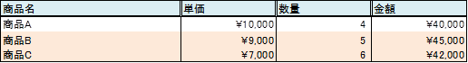
下記のようにReportProcessListenerと組み合わせることで、データサイズに合わせて適用範囲を正確に指定する事も可能です。
public void postParse( Sheet sheet, SheetParser sheetParser, SheetData sheetData) throws ParseException {
// シートから条件付き書式の設定を取得
HSSFSheet hssfSheet = (HSSFSheet)sheet;
HSSFSheetConditionalFormatting formating = hssfSheet.getSheetConditionalFormatting();
// TODO:データサイズの取得
int dataSize = 2;
int conditionCnt = formating.getNumConditionalFormattings();
for( int cnt = 0; cnt < conditionCnt; cnt++){
HSSFConditionalFormatting format = formating.getConditionalFormattingAt( cnt);
CellRangeAddress range = format.getFormattingRanges()[0];
// 適用範囲をデータサイズ分増やす
range.setLastRow( range.getLastRow() + dataSize);
}
}
条件付き書式で対応できない場合は、ReportProcessListenerからPOIのAPIを直接利用してSheetを操作します。